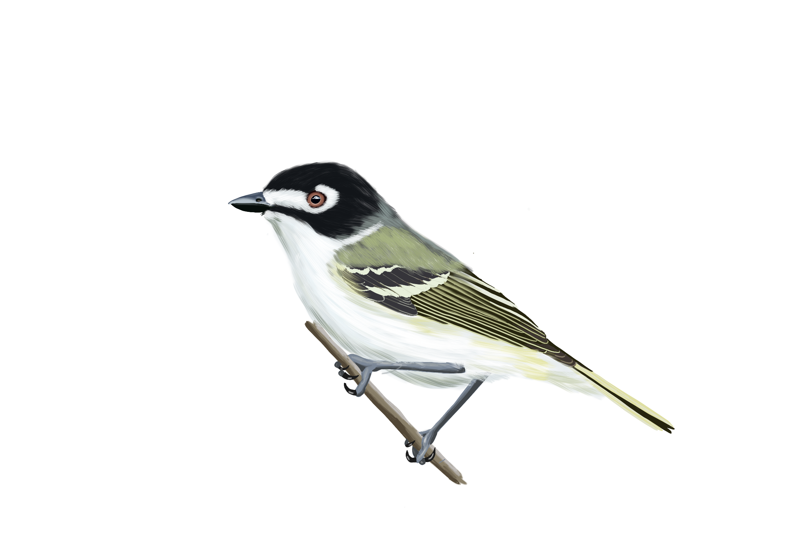
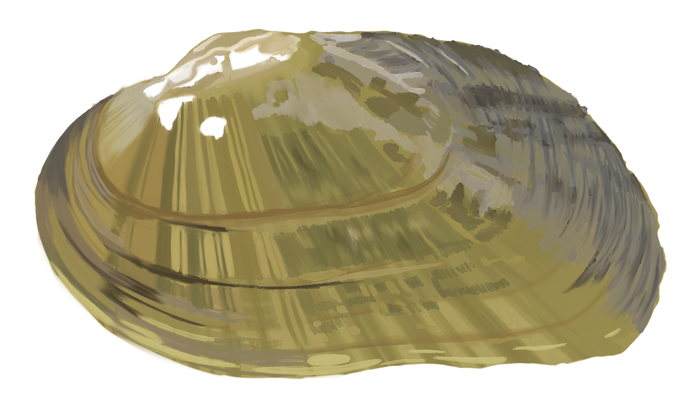
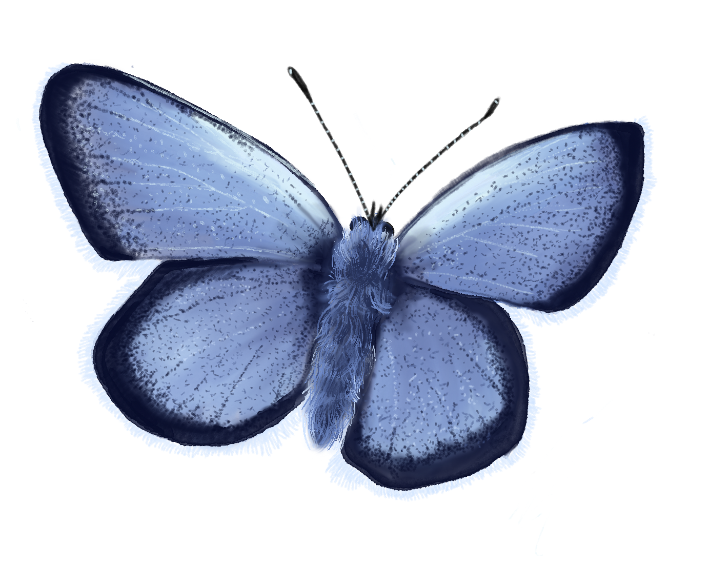
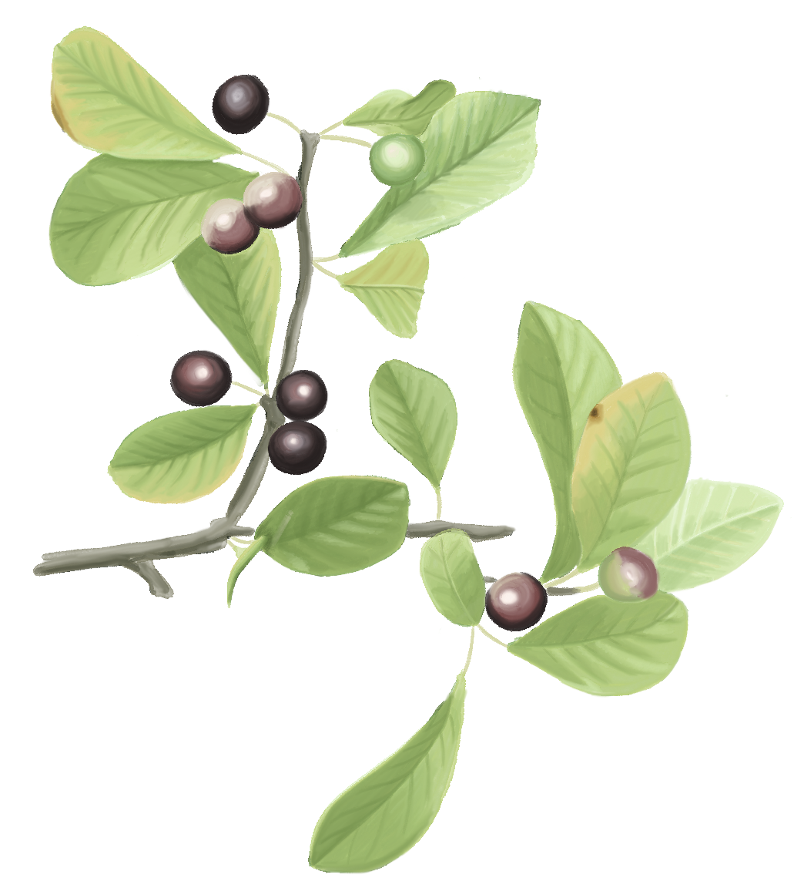
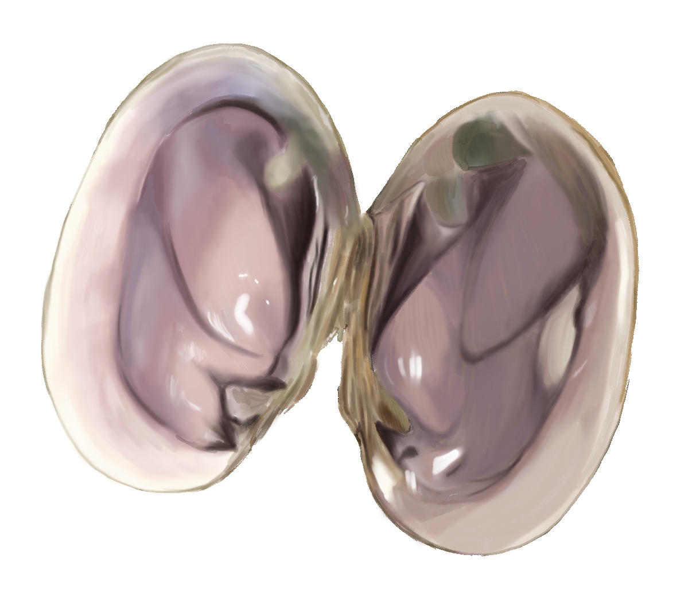
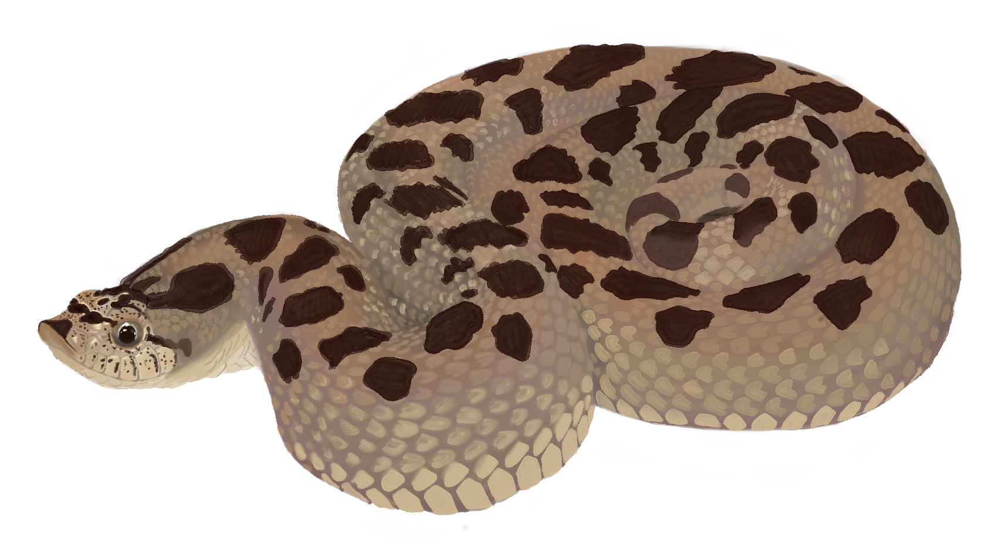
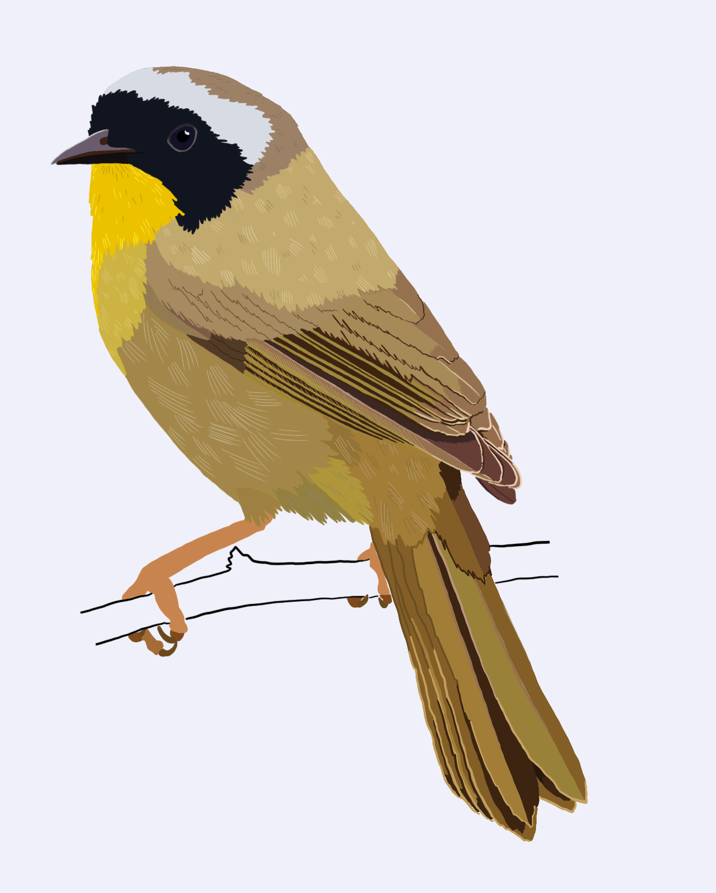

Illustration and Visual Communication
Alongside my research, I am interested in scientific illustration, figure design, and nature journaling as ways of observing and communicating ecological ideas. My work includes both published figures created in support of scientific projects and independent creative work centered on birds, landscapes, and natural history.
Published Works
The Genetic and Morphological Basis of Local Adaptation to Elevational Extremes in an Alpine Finch
Understanding patterns and mechanisms underlying local adaptation is becoming increasingly important for species conservation amid anthropogenically driven environmental change. Alpine systems are experiencing particularly intense pressure from environmental change resulting from increased rates of warming and corresponding loss of snow and ice. We integrate morphological and genetic analyses to identify traits important for local adaptation in one of the highest elevation breeding birds in North America, the Sierra Nevada Gray-crowned Rosy-Finch. We performed an in-depth analysis of how traits with known links to thermoregulation in birds such as wing length, bill size, and feather microstructure vary between two populations at sites with contrasting climate and environmental conditions. We identified loci underlying these traits using a genome-wide association study and further examined regions of the genome related to altitude adaptation and cold tolerance using FST outlier tests. Together, these results indicate that temperature, food availability, and alpine landscape features may impose multifaceted and potentially conflicting selective pressures on morphological traits important to adaptation in alpine birds. Overall, this work represents one of the first in-depth analyses of the genetic basis of adaptation in an alpine specialist songbird.
View Publication
Figure 1. Conceptual figure outlining sampling scheme and general methodology.

Figure 2. Results on morphological comparison for beak morphology. All of these traits were significantly different between populations, suggesting local adaptation.

Figure 3. Depiction of the feather traits measured and the results of our comparison. We found that only plumulaceous barbule node density was different between populations.

Figure 4. Manhattan plot depicting the results of the LMM, BSLMM, and FST analysis.
Ongoing Projects
A widespread gap in U.S. Endangered Species Act implementation: Risk of genetic erosion within populations
We apply indicators of intraspecific genetic diversity as adopted by the Convention on Biological Diversity to 161 species assessed for classification under the U.S. Endangered Species Act (ESA). In addition to contributions to data analysis and writing, I illustrated all animals and developed all figures for this paper.
View Publication
Figure 1. Genetic indicators by ESA classification status and taxonomic group.

Figure 2. Summary of the need, effort, benefit, key results, and takeaway of evaluating the 459 genetic indicators in at-risk species assessed under the ESA using the SSA framework.
Portfolio
A selection of independent creative work, including nature journaling, observational sketches, and other illustrations inspired by birds, ecology, and the natural world. If you're interested in commissioning illustrations of figures for a publication or project please email me!
Scientific Illustration

Bank Swallow

Brown-capped Rosy Finch

Yellow Warbler

Black-capped Vireo

Brook Floater

Fender's Blue Butterfly

Georgia Bully

Purple Lilliput

Southern Hognose

Common Yellowthroat